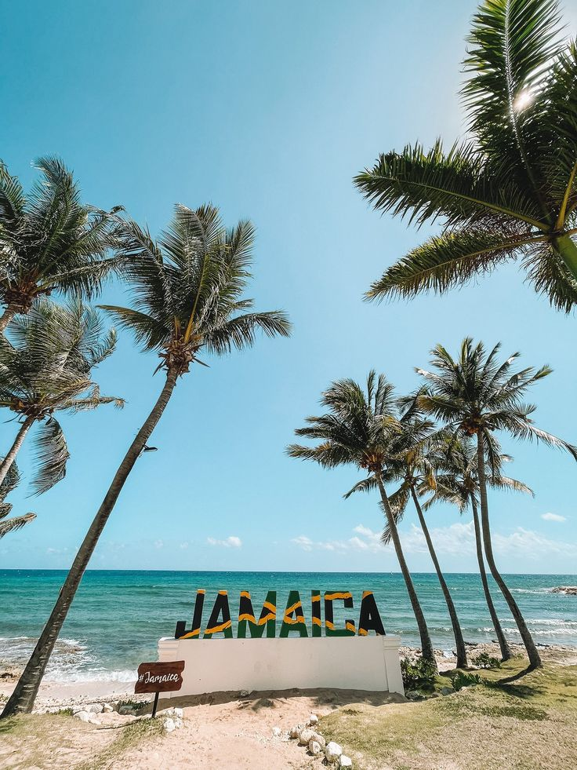
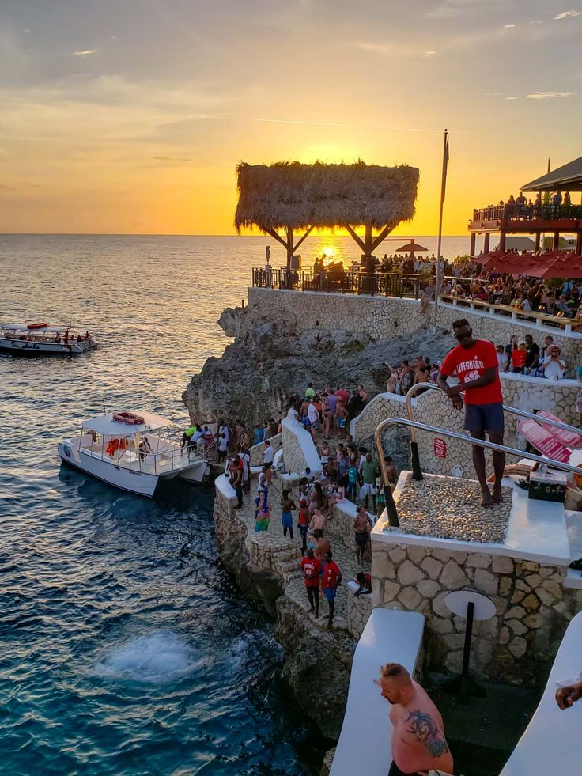
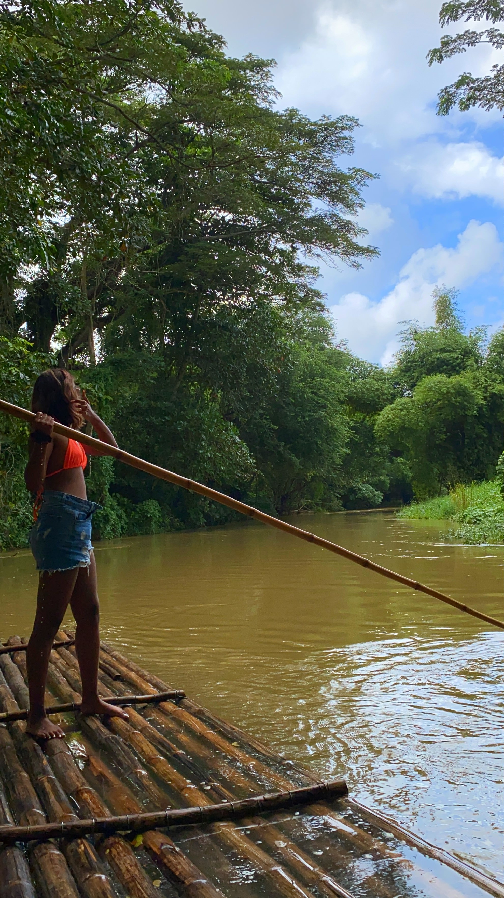
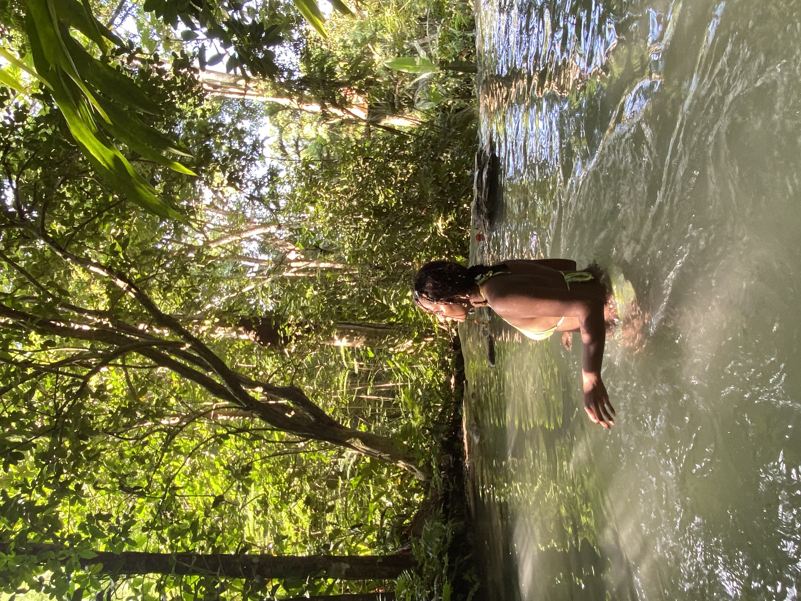
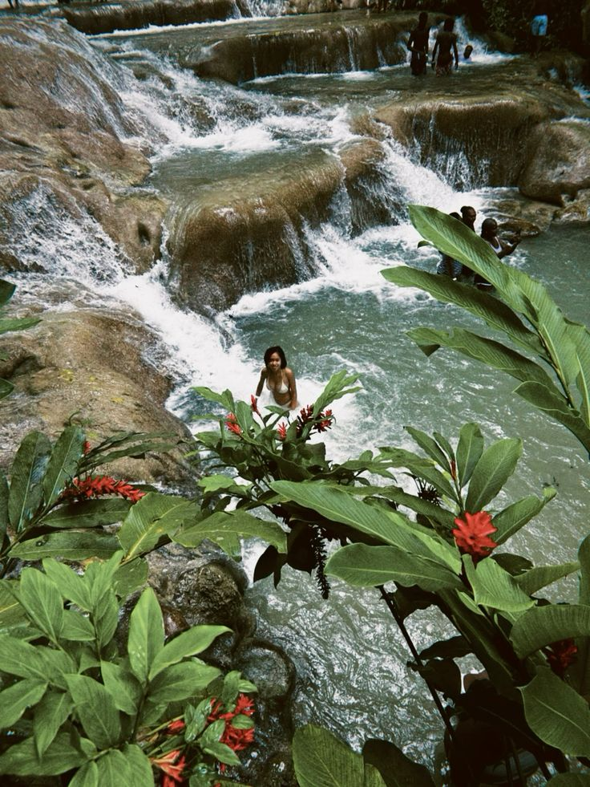
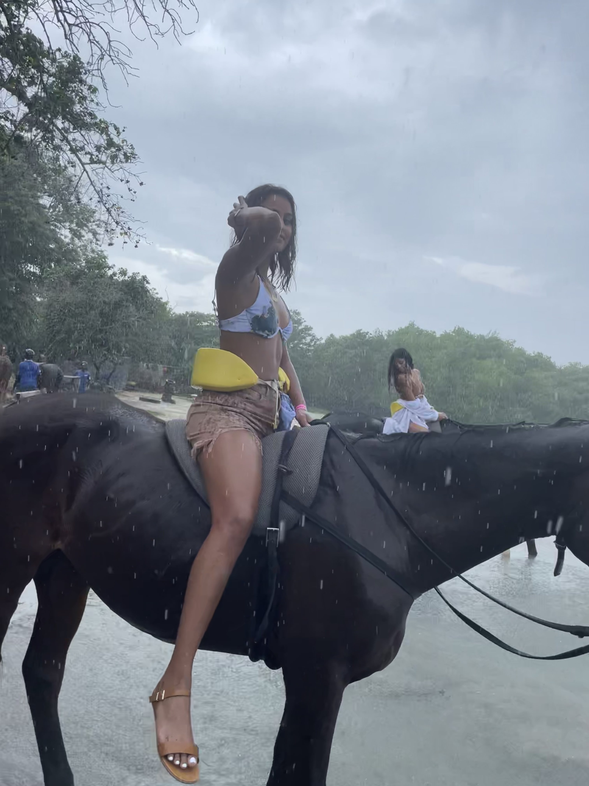
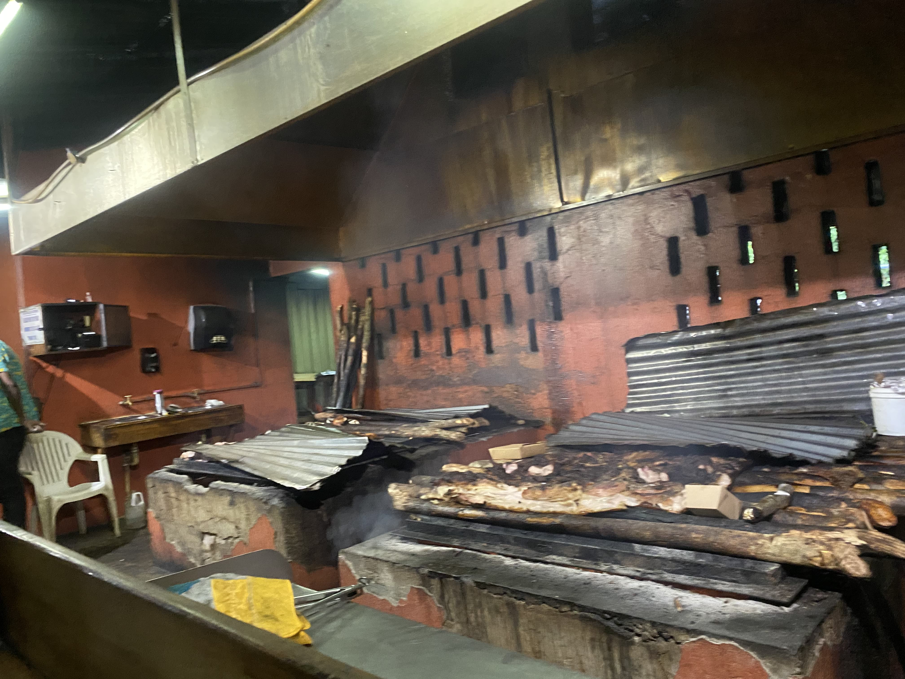
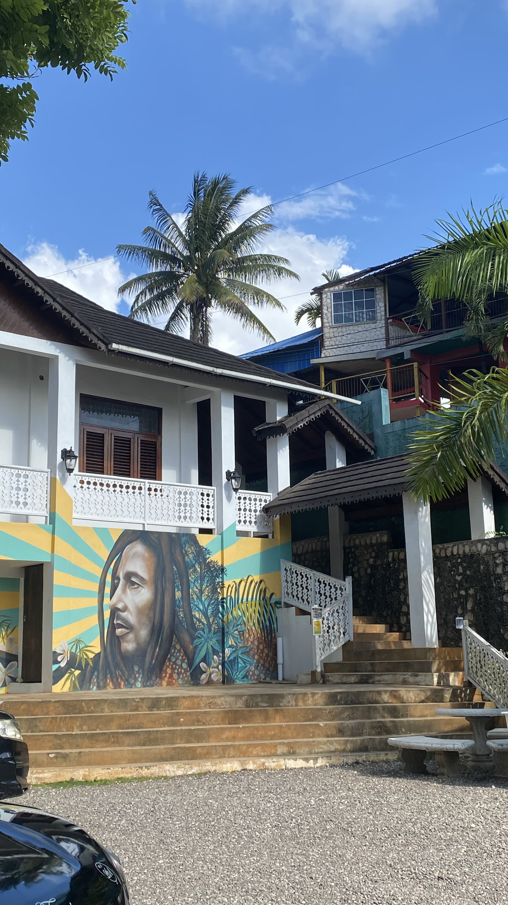
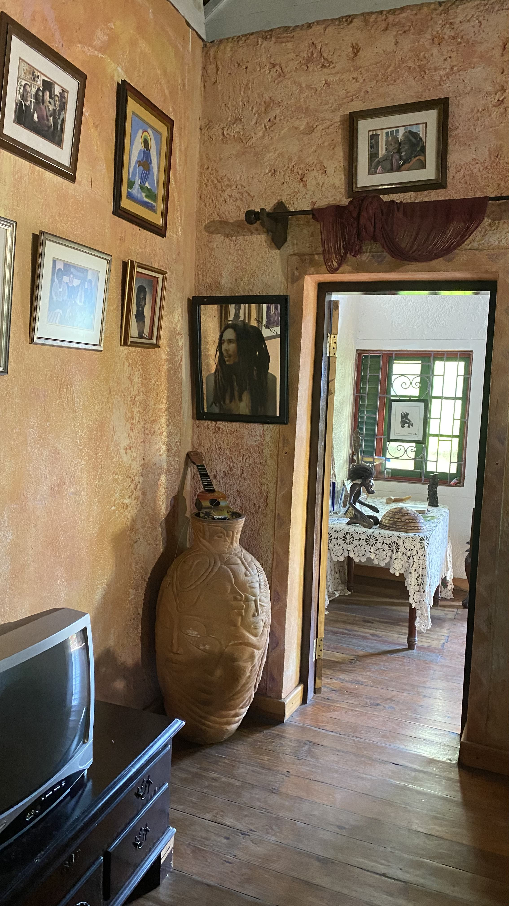
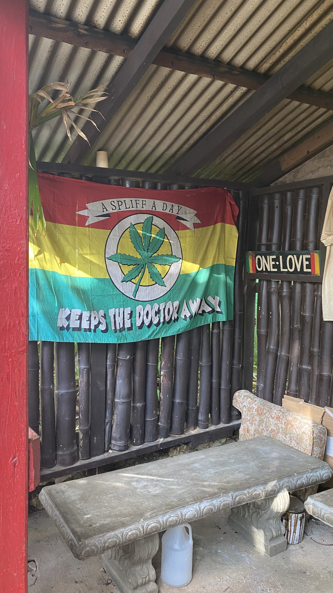

5-Day Itinerary
Jamaica is a vibrant destination with stunning beaches, rich history, and a lively culture. Here's a 5-day itinerary to immerse yourself in the heart of Jamaica:
- Day 1: Relax at Seven Mile Beach, Negril. Enjoy cliff diving at Rick’s Café and a reggae-filled dinner.  
- Day 2: Visit Dunn’s River Falls, go rafting on the Martha Brae, and explore local craft markets.  
- Day 3: Experience water horseback riding and indulge in wood-fired jerk chicken in the countryside.  
- Day 4: Tour the Bob Marley Museum, treat yourself to Devon House desserts, and dine on seafood at Port Royal.  
- Day 5: Snorkel at Montego Bay Marine Park and unwind at Doctor's Cave Beach. 
Travel Tips
- Best time to visit: November to mid-December
- Currency: Jamaican Dollar (JMD)
- Language: English, Jamaican Patois
- Must-try foods: Jerk chicken, ackee and saltfish, beef patties